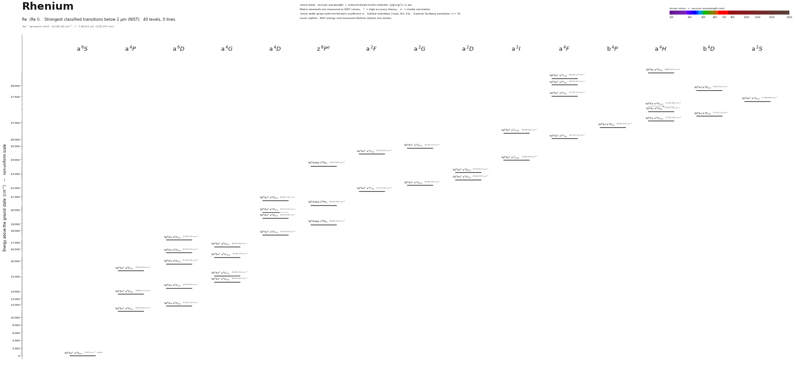

Rhenium energy level diagram
Energy levels and transitions of neutral rhenium (Re I): the 0 strongest classified lines below 2 µm from the NIST Atomic Spectra Database and the 40 levels they connect, each line with its vacuum wavelength, frequency and, for 0 of them, the reduced dipole matrix element derived from the NIST transition rate. Lifetimes, hyperfine constants and isotope shifts from the literature have not been compiled for this element yet.
Hover a line or a level to isolate it, click to keep it selected. Scroll to zoom, drag to move.

Download: diagram (PDF) diagram (SVG) transitions (CSV) levels (CSV) source code

Listed Re transitions below 2 µm
| Lower level | Upper level | λ vacuum (nm) | λ air (nm) | ν (THz) | Type | |⟨J‖er‖J′⟩| (ea₀) | A (s⁻¹) | Branching (%) | Source of matrix element / A |
|---|
Reduced dipole matrix elements follow the convention A = ω³|d|²/(3πε₀ħc³(2J′+1)), with J′ the upper level. Tags show where a number comes from: measured, NIST compilation, high-accuracy theory, or a model calculation.
Re energy levels
| Level | Energy (cm⁻¹) | J | Parity | Lifetime | gJ | Hyperfine A (MHz) | Hyperfine B (MHz) | Lifetime source | Hyperfine source |
|---|---|---|---|---|---|---|---|---|---|
| 5d56s2 a 6S5/2 | 0.000 | 5/2 | even | stable | 1.95 | – | – | – | – |
| 5d56s2 a 4P5/2 | 11583.960 | 5/2 | even | – | 1.278 | – | – | – | – |
| 5d66s a 6D9/2 | 11754.520 | 9/2 | even | – | 1.545 | – | – | – | – |
| 5d56s2 a 4P3/2 | 13826.120 | 3/2 | even | – | 1.485 | – | – | – | – |
| 5d66s a 6D7/2 | 14216.860 | 7/2 | even | – | 1.567 | – | – | – | – |
| 5d56s2 a 4G5/2 | 14621.460 | 5/2 | even | – | 1.151 | – | – | – | – |
| 5d56s2 a 4G7/2 | 15058.190 | 7/2 | even | – | 1.153 | – | – | – | – |
| 5d56s2 a 4P1/2 | 15165.890 | 1/2 | even | – | 2.368 | – | – | – | – |
| 5d66s a 6D5/2 | 15770.420 | 5/2 | even | – | 1.309 | – | – | – | – |
| 5d56s2 a 4G11/2 | 16307.150 | 11/2 | even | – | 1.242 | – | – | – | – |
| 5d66s a 6D3/2 | 16327.510 | 3/2 | even | – | 1.706 | – | – | – | – |
| 5d56s2 a 4G9/2 | 16619.280 | 9/2 | even | – | 1.175 | – | – | – | – |
| 5d66s a 6D1/2 | 17238.300 | 1/2 | even | – | 2.521 | – | – | – | – |
| 5d56s2 a 4D7/2 | 17330.820 | 7/2 | even | – | 1.255 | – | – | – | – |
| 5d56s6p z 8P°5/2 | 18950.100 | 5/2 | odd | – | 2.274 | – | – | – | – |
| 5d56s2 a 4D5/2 | 19457.890 | 5/2 | even | – | 1.361 | – | – | – | – |
| 5d56s2 a 4D1/2 | 19757.910 | 1/2 | even | – | 0.983 | – | – | – | – |
| 5d56s6p z 8P°7/2 | 20447.800 | 7/2 | odd | – | 1.926 | – | – | – | – |
| 5d56s2 a 4D3/2 | 20481.730 | 3/2 | even | – | 1.451 | – | – | – | – |
| 5d56s2 a 2F7/2 | 21775.400 | 7/2 | even | – | 1.135 | – | – | – | – |
| 5d56s2 a 2G9/2 | 22160.040 | 9/2 | even | – | 1.198 | – | – | – | – |
| 5d56s2 a 2D3/2 | 22422.830 | 3/2 | even | – | 0.781 | – | – | – | – |
| 5d56s2 a 2D5/2 | 23154.810 | 5/2 | even | – | 1.189 | – | – | – | – |
| 5d56s6p z 8P°9/2 | 23631.820 | 9/2 | odd | – | 1.768 | – | – | – | – |
| 5d56s2 a 2I11/2 | 23956.000 | 11/2 | even | – | 0.995 | – | – | – | – |
| 5d56s2 a 2F5/2 | 24425.400 | 5/2 | even | – | 1.067 | – | – | – | – |
| 5d56s2 a 2G7/2 | 24724.220 | 7/2 | even | – | 1.03 | – | – | – | – |
| 5d56s2 a 4F3/2 | 26131.570 | 3/2 | even | – | 0.65 | – | – | – | – |
| 5d56s2 a 2I13/2 | 26348.960 | 13/2 | even | – | 1.1 | – | – | – | – |
| 5d66s b 4P5/2 | 26661.430 | 5/2 | even | – | 1.32 | – | – | – | – |
| 5d66s a 4H13/2 | 27130.140 | 13/2 | even | – | 1.208 | – | – | – | – |
| 5d66s b 4D7/2 | 27141.130 | 7/2 | even | – | 1.34 | – | – | – | – |
| 5d66s a 4H9/2 | 27161.350 | 9/2 | even | – | – | – | – | – | – |
| 5d66s a 4H11/2 | 27243.880 | 11/2 | even | – | 1.18 | – | – | – | – |
| 5d56s2 a 2S1/2 | 27384.800 | 1/2 | even | – | – | – | – | – | – |
| 5d56s2 a 4F9/2 | 27514.310 | 9/2 | even | – | 1.13 | – | – | – | – |
| 5d66s b 4D3/2 | 27827.650 | 3/2 | even | – | 0.888 | – | – | – | – |
| 5d56s2 a 4F5/2 | 28030.320 | 5/2 | even | – | 1.12 | – | – | – | – |
| 5d56s2 a 4F7/2 | 28542.130 | 7/2 | even | – | – | – | – | – | – |
| 5d66s a 4H7/2 | 28809.870 | 7/2 | even | – | 0.93 | – | – | – | – |
Re⁺ ionisation limit 63181.60 cm⁻¹ = 7.83352 eV (158.274 nm)
Sources
Atoms with measured data
- Lithium-632 levels, 85 lines
- Lithium-732 levels, 85 lines
- Beryllium-915 levels, 24 lines
- Sodium-2336 levels, 106 lines
- Magnesium-2418 levels, 61 lines
- Magnesium-2518 levels, 61 lines
- Potassium-3934 levels, 84 lines
- Potassium-4034 levels, 84 lines
- Potassium-4134 levels, 84 lines
- Calcium-4035 levels, 61 lines
- Calcium-4335 levels, 61 lines
- Rubidium-8536 levels, 94 lines
- Rubidium-8736 levels, 94 lines
- Strontium-8740 levels, 70 lines
- Strontium-8840 levels, 70 lines
- Caesium-13331 levels, 79 lines
- Barium-13744 levels, 89 lines
- Barium-13844 levels, 89 lines
- Dysprosium-16339 levels, 55 lines
- Dysprosium-16439 levels, 55 lines
- Ytterbium-17118 levels, 26 lines
- Ytterbium-17418 levels, 26 lines